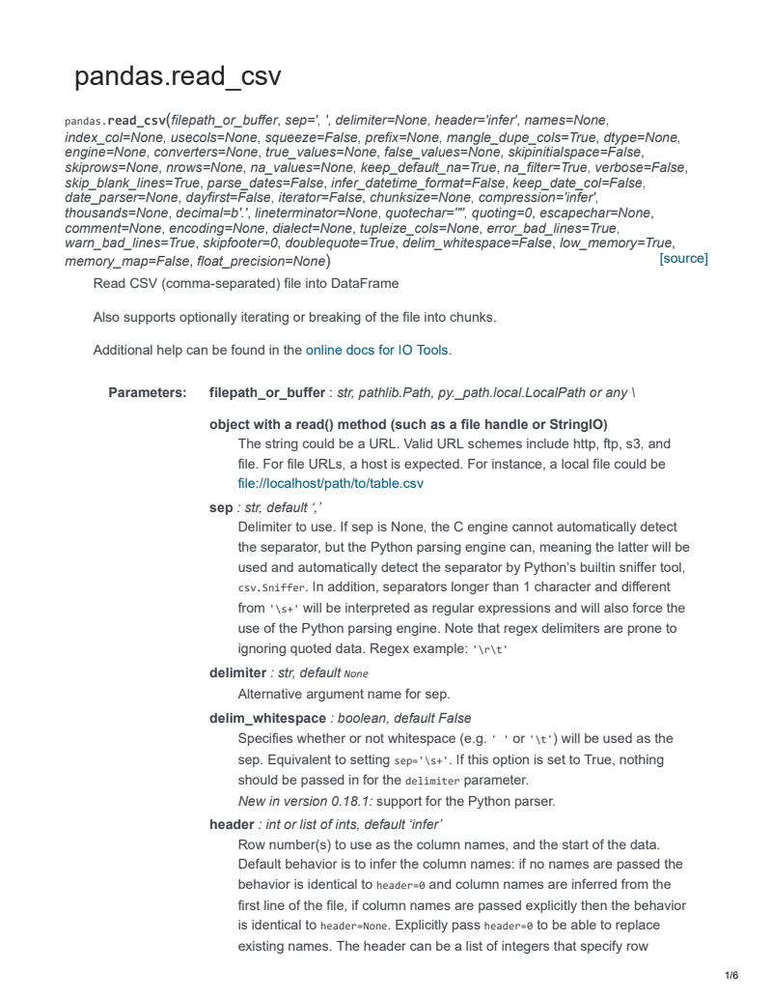

Page
/6
Page 1 of 6
1/6
[source]
pandas.read_csv
pandas.read_csv(filepath_or_buffer, sep=', ', delimiter=None, header='infer', names=None,
index_col=None, usecols=None, squeeze=False, prefix=None, mangle_dupe_cols=True, dtype=None,
engine=None, converters=None, true_values=None, false_values=None, skipinitialspace=False,
skiprows=None, nrows=None, na_values=None, keep_default_na=True, na_filter=True, verbose=False,
skip_blank_lines=True, parse_dates=False, infer_datetime_format=False, keep_date_col=False,
date_parser=None, dayfirst=False, iterator=False, chunksize=None, compression='infer',
thousands=None, decimal=b'.', lineterminator=None, quotechar='"', quoting=0, escapechar=None,
comment=None, encoding=None, dialect=None, tupleize_cols=None, error_bad_lines=True,
warn_bad_lines=True, skipfooter=0, doublequote=True, delim_whitespace=False, low_memory=True,
memory_map=False, float_precision=None)
Read CSV (comma-separated) file into DataFrame
Also supports optionally iterating or breaking of the file into chunks.
Additional help can be found in the online docs for IO Tools.
Parameters: filepath_or_buffer : str, pathlib.Path, py._path.local.LocalPath or any \
object with a read() method (such as a file handle or StringIO)
The string could be a URL. Valid URL schemes include http, ftp, s3, and
file. For file URLs, a host is expected. For instance, a local file could be
file://localhost/path/to/table.csv
sep : str, default ‘,’
Delimiter to use. If sep is None, the C engine cannot automatically detect
the separator, but the Python parsing engine can, meaning the latter will be
used and automatically detect the separator by Python’s builtin sniffer tool,
csv.Sniffer. In addition, separators longer than 1 character and different
from '\s+' will be interpreted as regular expressions and will also force the
use of the Python parsing engine. Note that regex delimiters are prone to
ignoring quoted data. Regex example: '\r\t'
delimiter : str, default None
Alternative argument name for sep.
delim_whitespace : boolean, default False
Specifies whether or not whitespace (e.g. ' ' or '\t') will be used as the
sep. Equivalent to setting sep='\s+'. If this option is set to True, nothing
should be passed in for the delimiter parameter.
New in version 0.18.1: support for the Python parser.
header : int or list of ints, default ‘infer’
Row number(s) to use as the column names, and the start of the data.
Default behavior is to infer the column names: if no names are passed the
behavior is identical to header=0 and column names are inferred from the
first line of the file, if column names are passed explicitly then the behavior
is identical to header=None. Explicitly pass header=0 to be able to replace
existing names. The header can be a list of integers that specify row
Page 2 of 6
2/6
locations for a multi-index on the columns e.g. [0,1,3]. Intervening rows that
are not specified will be skipped (e.g. 2 in this example is skipped). Note
that this parameter ignores commented lines and empty lines if
skip_blank_lines=True, so header=0 denotes the first line of data rather than
the first line of the file.
names : array-like, default None
List of column names to use. If file contains no header row, then you
should explicitly pass header=None. Duplicates in this list will cause a
UserWarning to be issued.
index_col : int or sequence or False, default None
Column to use as the row labels of the DataFrame. If a sequence is given,
a MultiIndex is used. If you have a malformed file with delimiters at the end
of each line, you might consider index_col=False to force pandas to _not_
use the first column as the index (row names)
usecols : list-like or callable, default None
Return a subset of the columns. If list-like, all elements must either be
positional (i.e. integer indices into the document columns) or strings that
correspond to column names provided either by the user in names or
inferred from the document header row(s). For example, a valid list-like
usecols parameter would be [0, 1, 2] or [‘foo’, ‘bar’, ‘baz’]. Element order is
ignored, so usecols=[0, 1] is the same as [1, 0]. To instantiate a
DataFrame from data with element order preserved use pd.read_csv(data,
usecols=['foo', 'bar'])[['foo', 'bar']] for columns in ['foo', 'bar'] order
or pd.read_csv(data, usecols=['foo', 'bar'])[['bar', 'foo']] for ['bar',
'foo'] order.
If callable, the callable function will be evaluated against the column
names, returning names where the callable function evaluates to True. An
example of a valid callable argument would be lambda x: x.upper() in
['AAA', 'BBB', 'DDD']. Using this parameter results in much faster parsing
time and lower memory usage.
squeeze : boolean, default False
If the parsed data only contains one column then return a Series
prefix : str, default None
Prefix to add to column numbers when no header, e.g. ‘X’ for X0, X1, ...
mangle_dupe_cols : boolean, default True
Duplicate columns will be specified as ‘X’, ‘X.1’, ...’X.N’, rather than
‘X’...’X’. Passing in False will cause data to be overwritten if there are
duplicate names in the columns.
dtype : Type name or dict of column -> type, default None
Data type for data or columns. E.g. {‘a’: np.float64, ‘b’: np.int32} Use str or
object together with suitable na_values settings to preserve and not
interpret dtype. If converters are specified, they will be applied INSTEAD of
dtype conversion.
engine : {‘c’, ‘python’}, optional
Page 3 of 6
3/6
Parser engine to use. The C engine is faster while the python engine is
currently more feature-complete.
converters : dict, default None
Dict of functions for converting values in certain columns. Keys can either
be integers or column labels
true_values : list, default None
Values to consider as True
false_values : list, default None
Values to consider as False
skipinitialspace : boolean, default False
Skip spaces after delimiter.
skiprows : list-like or integer or callable, default None
Line numbers to skip (0-indexed) or number of lines to skip (int) at the start
of the file.
If callable, the callable function will be evaluated against the row indices,
returning True if the row should be skipped and False otherwise. An
example of a valid callable argument would be lambda x: x in [0, 2].
skipfooter : int, default 0
Number of lines at bottom of file to skip (Unsupported with engine=’c’)
nrows : int, default None
Number of rows of file to read. Useful for reading pieces of large files
na_values : scalar, str, list-like, or dict, default None
Additional strings to recognize as NA/NaN. If dict passed, specific per- column NA values. By default the following values are interpreted as NaN:
‘’, ‘#N/A’, ‘#N/A N/A’, ‘#NA’, ‘-1.#IND’, ‘-1.#QNAN’, ‘-NaN’, ‘-nan’, ‘1.#IND’,
‘1.#QNAN’, ‘N/A’, ‘NA’, ‘NULL’, ‘NaN’, ‘n/a’, ‘nan’, ‘null’.
keep_default_na : bool, default True
Whether or not to include the default NaN values when parsing the data.
Depending on whether na_values is passed in, the behavior is as follows:
If keep_default_na is True, and na_values are specified, na_values is
appended to the default NaN values used for parsing.
If keep_default_na is True, and na_values are not specified, only the
default NaN values are used for parsing.
If keep_default_na is False, and na_values are specified, only the NaN
values specified na_values are used for parsing.
If keep_default_na is False, and na_values are not specified, no strings
will be parsed as NaN.
Note that if na_filter is passed in as False, the keep_default_na and
na_values parameters will be ignored.
na_filter : boolean, default True
Detect missing value markers (empty strings and the value of na_values).
In data without any NAs, passing na_filter=False can improve the
performance of reading a large file
verbose : boolean, default False
pandas.read_csv+%E2%80%94+pandas+0.23.1+documentation.pdf
pandas.read_csv+%E2%80%94+pandas+0.23.1+documentation.pdf